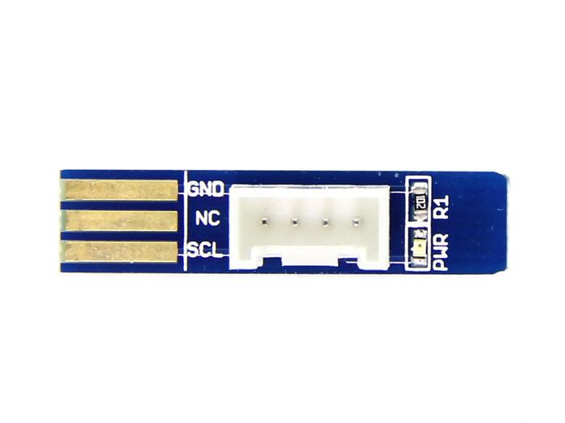

The Grove - NunChuck is a small PCB that adapts the Wii Nunchuck connector to standard Grove connector. The power, ground and two-wire interface of the Nunchuck are all broken out to a 4-pin 0.1" pitch header.
This “Grove - NunChuck”, let you play with the Wii Nunchuck and other Wii remote peripherals without needing you to cut cables. Just plug it into the Wii Nunchuck, then into the Grove - Base Shield.
Model: HOK05171P

There is Wiichuck- A Wii-Nunchuck break out board, they are similar.
• Designed to be inserted into the connector of a Nintendo Wii Nunchuck
• Connects to Grove - Base Shield
• Interface Type: I2C
• Work Voltage: +5 V
Resource File: Grove - NunChuck Eagle File
If you have questions or other better design ideas, you can go to our forum or wish to discuss.
Copyright (c) 2008-2016 Seeed Development Limited (www.seeedstudio.com / www.seeed.cc)